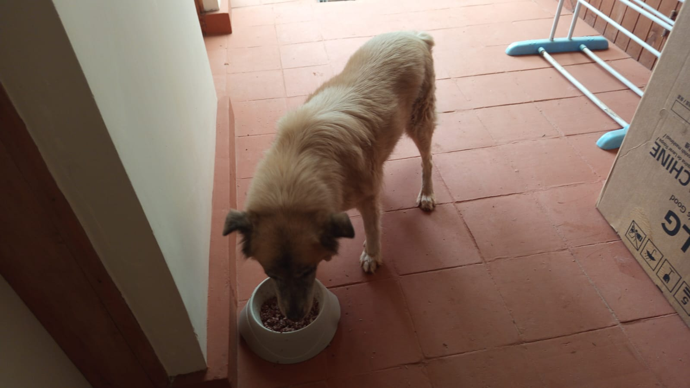

Mucheru World of Golf
Field civil engineering, agronomic drainage installation, and logistical haulage operations at Mucheru World of Golf achieved massive progress under the leadership of supervisors Ken and Kinoti:
- Course-Wide Drainage Trenching Across Eight Putting Greens (Greens 1, 2, 3, 4, 6, 8, 9 & 18): Ground excavation crews achieved major momentum, manually excavating deep subgrade drainage channels across eight championship putting greens: Green No. 1, Green No. 2, Green No. 3, Green No. 4, Green No. 6, Green No. 8, Green No. 9, and Green No. 18. Each trench was cut to precise depths through the red soil berm collars to connect subterranean perforated outfall pipes beneath the gravel and volcanic pumice foundation layers directly to outer drainage conduits.
- Major Course Milestone — All Green Drainage Trenches Complete Except Green 14: With eight greens completed today alongside previously excavated complexes, drainage trenching across the entire golf course has reached a definitive milestone. Drainage channels are now fully excavated across every putting green on the course, with only Green No. 14 remaining for final excavation.
- Main Irrigation Pipeline Laid in Perimeter Trench (Gate to Tee 15): Heavy-duty high-density polyethylene (HDPE) main irrigation piping was uncoiled, aligned, and placed directly into the linear utility trench excavated parallel to the perimeter boundary wire mesh fence. The pipeline run extends continuously from the main golf course entrance gate all the way close to Tee 15, establishing the primary water distribution artery for course sprinklers.
- Red Topsoil Haulage from Quarry to Golf Site (Kinoti): Kinoti operated the farm tractor paired with the heavy red tipping trailer to load and haul high-grade red topsoil from the borrow pit quarry directly to the golf course development footprint. Labor crews assisted with manual shovel loading at the quarry cut face to supply fine red soil for green surrounds shaping.
- Irrigation Pipe Logistics from Greenhouse (2 Trips by Kinoti): Utilizing the farm tractor and trailer, Kinoti completed two full logistical round trips transporting bundles and coils of black HDPE irrigation pipe from the farm greenhouse storage facility to active installation sectors across the golf course.
Key Accomplishments — Mucheru World of Golf
Subgrade drainage trenches successfully dug across 8 greens (Greens 1, 2, 3, 4, 6, 8, 9 & 18), completing trenching for all putting greens across the course except Green 14; main irrigation pipeline placed in the perimeter trench from the gate to near Tee 15; two tractor loads of irrigation pipes delivered from the greenhouse; and red topsoil hauled from the quarry.
Photographic field documentation capturing aerial drone surveys of putting green drainage excavations, ground trench profiling, tractor-trailer pipe logistics, quarry red soil loading, and perimeter pipeline placement.

Putting Green Drainage — Subgrade Excavation
Aerial drone capture showing workers actively digging the drainage outfall trench connecting into the circular putting green basin through the red soil collar.

Contoured Putting Green — Drainage Outfall Channel
High-altitude drone survey of an organic kidney-shaped putting green complex displaying the clean drainage trench cut through the red containment berm.

Green Sub-Base — Pumice Layer & Trench Alignment
Overhead aerial perspective detailing the porous volcanic pumice foundation bed, red soil containment slopes, aggregate staging heaps, and excavated trench line.

Perimeter Green Complex — Drainage Trench Cut
Drone overview of putting green situated alongside the boundary roadway, highlighting the clean linear drainage trench extending from the basin edge.

Foundation Stratification — Trench Outfall Inspection
High-resolution drone capture illustrating structural foundation layering, stockpiled sand and ballast, and the drainage trench cut out from the green liner.

Woodland Green Setting — Drainage Trench Invert
Drone perspective showing the completed subgrade trench cut through red perimeter soil, connecting the gravel-filled green basin to exterior drainage corridors.

Putting Green Basin — Radial Drainage Trench
High-angle drone view displaying the circular green's leveled pumice surface and the radial trench excavated through the perimeter retaining berm.

Green Foundation Matrix — Outfall Trench Profiling
Aerial drone photograph highlighting the green's pumice bed, stockpiles of crushed rock aggregate, and the finished linear trench invert.

Dual Green Complex — Landscape Drainage Survey
Expansive high-altitude drone capture surveying two distinct putting green complexes simultaneously, featuring connecting fairways and individual drainage trenches.

Green Basin Outfall — Ground Drainage Detail
Ground-level close-up showing the excavated subgrade drainage trench connecting directly through the red soil berm to the gravel-covered green basin liner.

Borrow Pit Quarry — Red Topsoil Loading
Kinoti operating the farm tractor with red tipping trailer backed into the soil quarry, with site workers shovel-loading red topsoil for golf course shaping.

Course Irrigation Logistics — Pipe Offloading
Ground crew carefully offloading long bundles of heavy-duty black HDPE irrigation pipes from the tractor trailer onto the course fairways.

Haulage Dispatch — LIMA Tractor & Trailer Delivery
The green LIMA tractor and trailer fully loaded with coils and straight runs of HDPE pipe arriving at the golf course from the greenhouse, driven by Kinoti.

Perimeter Utility Trench — Main Pipe Placement
Continuous black HDPE irrigation pipeline positioned inside the linear excavated trench parallel to the wire mesh boundary fence from the gate toward Tee 15.
Agronomic Drainage Infrastructure Standard
Executing precision drainage trenches across Greens 1, 2, 3, 4, 6, 8, 9, and 18 leaves only Green 14 remaining, bringing the entire golf course green subterranean drainage system to 94.4% course completion. Simultaneous placement of main HDPE irrigation piping ensures synchronized civil progression across water distribution and drainage networks.
🎥 Mucheru World of Golf — Site Progress Video (September 15, 2026)
Field video recording documenting putting green drainage trenching operations, farm tractor red soil haulage from the quarry borrow pit, and HDPE irrigation pipe delivery and installation along the boundary fence line.
Chaka Farms
Operational routines across dairy livestock husbandry, canine pack behavior training, and compound grounds maintenance proceeded systematically at Chaka Farms:
- Dairy Cow Milking Yield (Gross Production): Kamandau executed the morning and evening milking sessions, recording a cumulative gross production of 4.0 Litres (strictly in Litres: 2.0L morning yield and 2.0L evening yield).
-
Rations & Deductions Reconciliation: An exact total of 2.0 Litres was disbursed directly out of the gross milking yield for young stock nutrition and personnel allocations:
- • Goat Kids Ration: 1.0 Litre total (0.5L morning ration + 0.5L evening ration for young stock sustenance).
- • Staff Allocation — Gladys: 0.5 Litres.
- • Staff Allocation — Maasai: 0.5 Litres.
- Net Remaining Farm Milk Reserve: Deducting the 2.0L total disbursements from the 4.0L gross yield left an exact net farm reserve of 2.0 Litres retained in cold storage.
- Canine Unit Socialization & Grazing Exercise (Overseen by Willy): Willy conducted an advanced off-leash socialization and pasture exercise session for dogs Mali, Zara, and Coby. The canines walked calmly off-leash amongst the farm goat herd while grazing, displaying calm pack behavior without chasing or startling livestock.
- Kennel Manners & Paw Command Training (Willy): Structured obedience routines were reinforced inside the kennels, focusing on patient kennel gate manners during ingress and egress, along with responsive execution of the paw command.
- General Compound Cleanliness & Upkeep (Margaret & Monica): Margaret and Monica performed compound cleanliness routines, sweeping farm access corridors, raking perimeter grounds, and clearing organic debris to maintain sanitary farmstead conditions.
Key Accomplishments — Chaka Farms
Dairy cow milking recorded at 4.0 Litres gross with 2.0 Litres disbursed to goat kids and staff, preserving 2.0 Litres in net farm reserve; dogs Mali, Zara, and Coby demonstrated excellent off-leash socialization and manners alongside grazing goats; kennel paw command observed; and compound grounds swept clean.
Quantitative daily milk production ledger recorded strictly in Litres (L). Rations and allocations represent authorized disbursements drawn directly out of the gross cow milking yield:
| Item / Description | Morning (L) | Evening (L) | Total (L) | Deduction (L) | Farm Balance (L) |
|---|---|---|---|---|---|
| Cow Milking Yield (Gross Production) | 2.0 L | 2.0 L | 4.0 L | — | 4.0 L |
| Goat Kids Ration (Young Stock Feed) | 0.5 L | 0.5 L | 1.0 L | - 1.0 L | — |
| Staff Allocation — Gladys | — | 0.5 L | 0.5 L | - 0.5 L | — |
| Staff Allocation — Maasai | — | 0.5 L | 0.5 L | - 0.5 L | — |
| Total Allocations Deducted | 0.5 L | 1.5 L | - 2.0 L | - 2.0 L | Disbursed |
| Net Remaining Farm Balance | 1.5 L | 0.5 L | 2.0 L Net | — | 2.0 L |
Dairy Production & Disbursement Reconciliation Audit
Gross production reached 4.0 Litres (2.0L morning + 2.0L evening). Deductions drawn directly out of the gross volume totaled 2.0 Litres (1.0L for goat kids across morning and evening feedings, 0.5L for Gladys, and 0.5L for Maasai), leaving an exact audited net farm balance of 2.0 Litres retained in cold storage.
Operational log covering canine socialization protocols, multi-species pasture coexistence, obedience training, and farm compound sanitation:
- Off-Leash Multi-Species Socialization (Willy): Willy escorted dogs Mali, Zara, and Coby into open pasture zones where the farm goat herd was actively grazing. The dogs walked and exercised entirely off-leash, successfully demonstrating calm demeanor, social tolerance, and non-reactive coexistence alongside grazing goats.
- Kennel Manners & Gate Control: Willy reinforced behavioral patience at the kennel gates, requiring dogs to sit quietly before being released for exercise and maintaining order during return transitions.
- Paw Command Discipline: Each dog was taken through command reinforcement drills, with the paw command successfully tested and performed reliably.
- General Compound Cleanliness (Margaret & Monica): Margaret and Monica performed comprehensive cleaning across the residential and farmstead compound, clearing fallen leaves, raking gravel tracks, and maintaining high hygiene standards across all farm quarters.
Canine Socialization & Farm Harmony
Mali, Zara, and Coby proved fully non-reactive around livestock during off-leash grazing sessions; kennel manners and paw commands reinforced; and compound cleanliness maintained to high estate standards.
🎥 Canine Unit — Off-Leash Socialization & Goat Pasture Exercise
Field video recording capturing dogs Mali, Zara, and Coby walking calmly off-leash in the open fields, exercising alongside grazing farm goats, and demonstrating disciplined kennel manners under Willy's oversight.
Kabete Residence
Civil structural demolition, masonry rubble clearance, aggregate logistics, and residential upkeep advanced smoothly at Kabete Residence, with operations overseen and field updates shared by Njoki:
- 100% Completion of Gardener Store Wall Demolition: Structural demolition of the external stone masonry wall of the gardener store—situated immediately adjacent to the cold room beneath the upper veranda—was brought to full completion. Demolition crews knocked down the full vertical stone wall to ground grade, opening up the entire lower terrace alcove and exposing the reinforced concrete overhead support beam.
- Masonry Rubble Clearance & Excavation at Fireplace: Concurrently, workers executed extensive debris clearing and slope excavation around the outdoor fireplace embankment. Fractured masonry stones, mortar chunks, and excavated soil were broken down, gathered, and staged for reuse as hardcore backfill for the upcoming retaining wall footing.
- Commercial Lorry Delivery & Sand Offloading: A high-capacity commercial Isuzu tipper truck delivered a substantial consignment of clean, graded building sand to the residence. Site crews set up protective wooden barrier boards and offloaded the sand payload adjacent to the access driveway.
- Sand Bagging & Tarmac Pavement Clearance: To preserve clear vehicular circulation and prevent sediment wash into drainage channels, workers bagged offloaded sand into durable polypropylene sacks, transferring them onto plastic ground sheets while sweeping the tarmac pavement near the carport completely clean.
- Cement Stock Organization: Deliveries of 50kg Ndovu Blue Label and Simba cement sacks were neatly stacked and organized within the covered storeroom, keeping materials elevated and protected from moisture.
- Domestic Pet Care & Nutrition: Senior golden retriever Ajabu was nourished with his specialized meal on the shaded tiled patio veranda. Resident felines Reo, Mocha, and Aiko were fed concurrently from their individual stainless-steel dishes indoors.
Key Accomplishments — Kabete Residence
Gardener store stone masonry wall demolition brought to 100% completion, fully opening the lower terrace space; extensive rubble sorted and cleared at fireplace; commercial sand cargo safely offloaded, bagged, and cleared from the tarmac driveway; cement bags stacked; and domestic pets well cared for.
Visual field records documenting complete gardener store wall demolition, fireplace rubble clearance, sand truck offloading, driveway pavement cleaning, cement warehousing, and resident pets.

Gardener Store — Demolition Complete (100%)
Front wall of the gardener store adjacent to the cold room completely demolished to foundation level, showing the cleared interior alcove and overhead concrete beam.

Outdoor Fireplace — Demolition Rubble Clearance
Civil workers clearing piles of fractured masonry building stone and excavating earth beneath the upper terrace to establish stable retaining wall footing.

Sub-Terrace Alcove — Intensive Site Clearance
Full six-man crew in high-visibility vests breaking down heavy rock debris, sorting salvageable stone blocks, and clearing subsoil across the opened alcove.

Building Material Delivery — Lorry Sand Cargo
Close-up view of the commercial tipper truck cargo bed loaded with fine, high-grade construction sand delivered for civil masonry works.

Aggregate Logistics — Truck Side Offloading
Site worker utilizing protective wooden barrier panels to guide the controlled discharge of building sand from the commercial lorry onto the driveway shoulder.

Driveway Pavement — Sand Bagging Operation
Laborer bagging loose construction sand into sacks to clear the tarmac parking pavement, keeping vehicle driveways clean and unobstructed.

Material Staging — Bagging onto Ground Liners
Workers shoveling and bagging sand onto woven ground tarpaulins along the woodland shoulder, staging materials for upcoming masonry mortar mixing.

Material Warehousing — Cement Sack Stacking
Neatly stacked pallets of 50kg construction cement sacks organized in the secure storeroom, safely sheltered from weathering and dampness.

Store Inventory — Ndovu Blue Label Cement
Additional vertical stack of Ndovu Blue Label multi-purpose cement bags inventoried and staged for foundation masonry and retaining wall plastering.

Domestic Pet Care — Ajabu the Golden Retriever
Senior golden retriever Ajabu eating his evening meal comfortably from his dedicated feeding dish on the shaded tiled patio veranda.

Resident Felines — Reo, Mocha & Aiko
Resident cats Reo, Mocha, and Aiko enjoying their nutritional meal peacefully side by side from individual stainless-steel bowls indoors.
Civil Demolition & Material Management Protocol
Bringing the gardener store wall demolition to 100% completion clears critical structural headroom and footprint for the new fireplace retaining wall foundation. Prompt bagging and pavement sweeping ensures material conservation while maintaining clean residential vehicular access.
Amani Cottage
Grounds and landscape maintenance routines proceeded at Amani Cottage under the direct supervision of Edwin. Operations focused on maintaining deep turf hydration during dry weather conditions and ensuring pristine compound hygiene across all outdoor living and circulation spaces:
- Turf & Landscape Sprinkler Irrigation (Edwin): Edwin operated and systematically repositioned the sprinkler irrigation network across the front lawn, peripheral turf areas, and surrounding garden borders. Thorough, deep-root watering was delivered to replenish soil moisture reserves, prevent grass wilting, and promote vibrant green lawn vigor.
- Comprehensive Compound Grounds & Pathway Sweeping (Edwin): Detailed grounds sweeping was executed across the estate compound, covering stone garden pathways, the paved driveway approach, cottage verandas, and lawn perimeters. All dry fallen leaves, wind-blown organic matter, and twigs were cleared and gathered to maintain immaculate exterior presentation.
Key Accomplishments — Amani Cottage
Front lawn and landscape borders thoroughly irrigated via sprinkler systems, and comprehensive compound grounds and walkway sweeping completed under Edwin's oversight, maintaining pristine estate standards.